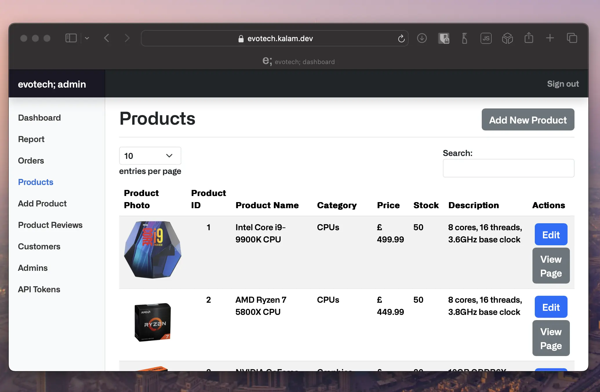
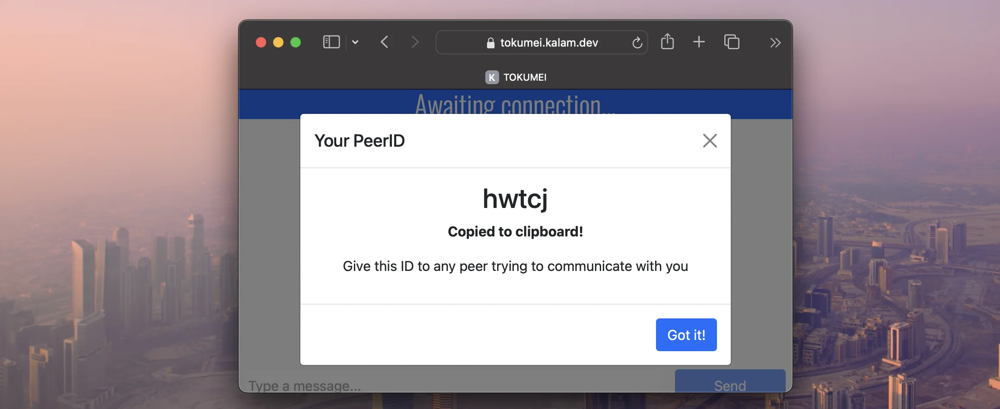

12:14 PM
20/12/2023


m kalam
evotech;
Tokumei
Lazy DSi File Downloader
evotech;
An open-source e-commerce platform
This is a team project that I lead as part of Aston University's team project module
I lead a team of 8 people in designing, developing and deploying an e-commerce site built from the ground up using PHP, MariaDB, HTML, CSS and JS
I learnt a great deal about project management, protected workflows, continuous integrations and comprehensive unit testing during this endeavour, and ultimately the efforts of the entire team combined to create a high-quality full-stack platform that can be deployed and used in a real-world scenario
The source code contains insights not visibile when viewing the site as a customer such as the admin page :
As well as the development processes like the usage of GitHub actions and collaboration within the team
I contributed heavily to the project and here is a list of the things I did
Team Leadership
- Created a supportive team environment, encouraging open communication and particiaption among all members
- Organised regular team meetings
Infrastructure Setup
- Established and configured GitHub repository, with protected workflows
- Created and structured Discord server in an organised manner for collaboration
Protected System
- Utilised access controls to protect project secrets
- Created a comprehensive automated backup system
- Implemented automated deployment pipelines (GitHub Actions)
Support and Mentoring
- Provided support to team members offering guidance and resources
- Conducted one-on-one mentoring for helping members
Documentation
- Authored README.MD and CONTRIBUTING.MD
- Created user-friendly guides for git usage and project setup
Database
- Created and designed project database
- Created scripts for generating dummy data
Deployment Scripts
- Created scripts for automated deployment across various OS
Development and Testing
- Took ownership of critical backend development tasks including :
- Database interactions
- API endpoints
- Designed and created complete stack for the admin dashboard and inventory management system
- Responsible for linking the frontend with the backend
- Designed and executed comprehensive unit tests using PHPUnit
Quality Assurance
- Conducted code reviews on all code submitted to main branch
- Collaborated with frontend and backend teams to identify any crossfunctional issues
Tokumei
An open-source peer to peer encrypted messaging app
Tokumei is an application I created and designed as part of my A-Level Computer Science NEA
At the time, WhatsApp, a popular messaging app, and a number of other apps were under public scrutiny due to privacy policy changes invoked fears that Meta / Facebook could read your messages
The problem with these applications is that the very nature of them being closed-source and passing through a server means you can't completely trust it
The solution?
Why not send the messages directly to the recipient without a middle man?
The concept of peer-to-peer data transfer has been incredibly successful with things like torrents, and as such I decided to implement this in my application
By leveraging WebRTC and the PeerJS network, users are given a PeerID to host a connection with
Users can then connect to the supplied code and enjoy spy free encrypted messaging!
This application was designed, developed, deployed and tested completely by me.